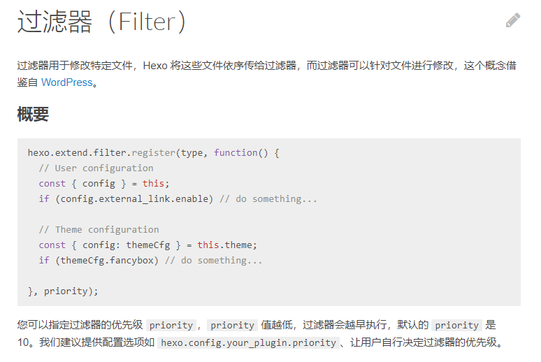

解决hexo 博客图片路径问题
解决hexo 博客图片路径问题
以前一直用的时在线图片，发现很多图片连接失效了，导致图片加载失败，于是想放本地。查询相关资料后，选择放本地改为相对路径引用,有2种方式
为每一个md文件建一个同名文件夹，把图片等静态资源放文件夹里面
建设一个公共的文件夹eg: Image，把所有的md文件引入的图片都 放里面
考虑到万一哪一天迁移，或者清理图片，图片多了不方便寻找，于是选择了方案1 ，用文件夹隔离
_config.yml 文件夹 配置
post_asset_folder: true此时还是有问题
原始MD文件引入 中文目录名/图片.jpg==> 中文目录名/%E5%9B%BE%E7%89%87.jpg
图片encode了 但是 目录名未encode
解决办法，全部改回去：

新建一个js文件 ，放在script下面 ，内容如下
1 | |
vscode Node调试
打开调试==> 打开配置==> 添加终端调试== 命令 “hexo g” 即可开启node调试
解决hexo 博客图片路径问题
https://godbuttton.github.io/2023/03/17/解决hexo-博客图片路径问题/